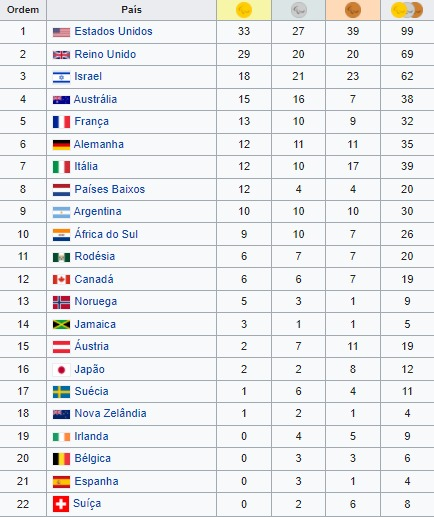

1968 Tel Aviv, IsraelA terceira edição dos Jogos Paralímpicos de Verão aconteceram em 1968. O planejamento original era da realização do evento junto com os Jogos Olímpicos de Verão de 1968 na Cidade do México, mas em 1966, o governo mexicano desistiu da realização dos Jogos devido dificuldades financeiras. Numa medida para evitar o cancelamento dos jogos, o governo israelense apresentou Tel Aviv como sede alternativa. Estes foram os primeiros Jogos Paralímpicos a não serem realizados na mesma sede dos Jogos Olímpicos.Modalidades→Tiro com arco→Lawn bowls →Atletismo →Dardos Paralímpicos →Sinuca →Natação →Tênis de mesa →Levantamento de Peso →Basquetebol em cadeira de rodas →Esgrima em cadeira de rodas Medalhas |